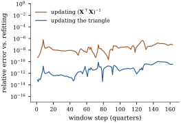

10.6 Updating and downdating
A fitted regression often has to be changed slightly:
new observations arrive, a suspicious case is set aside,
a window slides along a time series, a variable is added
or removed. Refitting from scratch costs
10.6.1. Adding and deleting observations
Adding a row is part (c) of Theorem 10.3.4:
Let
(a) (Adding a row.) There are
(b) (Deleting a row.) Let
(c) Each operation costs
Proof.
(a) is Theorem 10.3.4(c).
(b)
Apply the same rotations, in the same order, to
- (c) The rotations
act on rows of length at most
If
import numpy as np
import statsmodels.api as sm
def givens(a, b):
"""c, s, r with [[c, s], [-s, c]] @ [a, b] = [r, 0]."""
if b == 0.0:
return 1.0, 0.0, a
r = np.hypot(a, b)
return a / r, b / r, r
def update(T, z):
"""Triangle of [A; z'] from the triangle T of A: rotate the new row into T."""
T, z = T.copy(), np.array(z, dtype=float)
for k in range(len(z)):
c, s, r = givens(T[k, k], z[k])
Tk, zk = T[k, k:].copy(), z[k:].copy()
T[k, k:], z[k:] = c * Tk + s * zk, -s * Tk + c * zk
return T
def downdate(T, z):
"""Triangle of A with the row z' removed, from the triangle T of A (T'T = A'A)."""
m = len(z)
a = np.linalg.solve(T.T, z) # T'a = z; ||a||^2 is the leverage of z
alpha2 = 1.0 - a @ a
if alpha2 <= 0:
raise np.linalg.LinAlgError("the row cannot be removed (leverage >= 1)")
alpha = np.sqrt(alpha2)
T, w = T.copy(), np.zeros(m) # w: the extra row, initially zero
for k in range(m - 1, -1, -1): # rotate (a_k, alpha) into (0, new alpha)
c, s, r = givens(alpha, a[k])
alpha = r
Tk = T[k, k:].copy()
T[k, k:], w[k:] = c * Tk - s * w[k:], s * Tk + c * w[k:]
return T # on exit w equals zThe alternative, recursive least
squares (Plackett 1950), updates
10.6.2. Leave-one-out quantities from one fit
Many diagnostics ask what would happen if observation
Let
(a)
(b)
(c)
Proof.
- (a) is Exercise (B1), which follows from the deletion formula of Example (Deleting an observation).
- (b) Multiply (a) by
- (c) Put
With a QR factorization the leverages cost
Refit the state murder-rate regression with all
data = sm.datasets.statecrime.load_pandas().data # all 50 states and DC
y = data["murder"].to_numpy()
X = np.column_stack([np.ones(len(y)), data[["poverty", "single", "urban"]]])
n, p = X.shape
Q, R = np.linalg.qr(X)
beta = np.linalg.solve(R, Q.T @ y)
e = y - X @ beta
sse = e @ e
h = np.sum(Q ** 2, axis=1) # leverages
press_resid = e / (1 - h) # y_i minus its prediction without case i
sse_loo = sse - e ** 2 / (1 - h) # SSE after deleting case i
s_loo = np.sqrt(sse_loo / (n - 1 - p))
t_ext = e / (s_loo * np.sqrt(1 - h)) # externally studentized residuals
i = int(np.argmax(np.abs(press_resid)))
print(f"largest PRESS residual: {data.index[i]}, e = {e[i]:.3f}, h = {h[i]:.3f},"
f" e/(1-h) = {press_resid[i]:.3f}, t = {t_ext[i]:.2f}")
print(f"PRESS = {np.sum(press_resid ** 2):.2f}, SSE = {sse:.2f}")10.6.3. Adding and deleting variables
Changing the columns of
Let
Proof.
If
def add_column(Q1, R, x):
"""Thin QR of [X, x] from the thin QR of X (one Gram-Schmidt step, repeated once)."""
r = Q1.T @ x
w = x - Q1 @ r
r2 = Q1.T @ w # reorthogonalize: guards against cancellation
w, r = w - Q1 @ r2, r + r2
rho = np.linalg.norm(w)
Rn = np.block([[R, r[:, None]], [np.zeros((1, R.shape[1])), np.array([[rho]])]])
return np.column_stack([Q1, w / rho]), Rn10.6.4. A moving window
Quarterly US real consumption is regressed on an
intercept, real disposable income, real investment,
population and unemployment (the public-domain
macroeconomic series of Example (A macroeconomic design)),
in a window of 40 quarters that slides forward one
quarter at a time. Each step adds one row and deletes
one. Over the

macro = sm.datasets.macrodata.load_pandas().data
yw = macro["realcons"].to_numpy()
Xw = np.column_stack([np.ones(len(yw)), macro[["realdpi", "realinv", "pop", "unemp"]]])
w = 40 # ten years of quarterly data
print("kappa of the full design:", f"{np.linalg.cond(Xw):.2e}")K = np.linalg.inv(Xw[:w].T @ Xw[:w]) # (a) rank-one updates of the inverse
g = Xw[:w].T @ yw[:w]
Zw = np.column_stack([Xw, yw])
Tw = np.linalg.qr(Zw[:w], mode="r") # (b) triangle of [X, y]
p1 = Xw.shape[1]
err_sm, err_giv = [], []
for t in range(w, len(yw)):
new, old = Xw[t], Xw[t - w]
Kx = K @ new # add the new quarter (Sherman-Morrison)
K = K - np.outer(Kx, Kx) / (1 + new @ Kx)
Kx = K @ old # delete the oldest quarter
K = K + np.outer(Kx, Kx) / (1 - old @ Kx)
g = g + new * yw[t] - old * yw[t - w]
b_sm = K @ g
Tw = downdate(update(Tw, Zw[t]), Zw[t - w])
b_giv = np.linalg.solve(Tw[:p1, :p1], Tw[:p1, p1])
b_ref = np.linalg.lstsq(Xw[t - w + 1:t + 1], yw[t - w + 1:t + 1], rcond=None)[0] # (c) refit
err_sm.append(np.linalg.norm(b_sm - b_ref) / np.linalg.norm(b_ref))
err_giv.append(np.linalg.norm(b_giv - b_ref) / np.linalg.norm(b_ref))
print(f"final relative error: inverse updating {err_sm[-1]:.1e}, Givens {err_giv[-1]:.1e}")Idea. A change of one row or column
costs
10.6.5. Exercises
A. Check your understanding
Show that
B. Practice
Show that the leverage of row
Solution.
Let
Solution. Columns of
C. Going deeper
Feed the rows of